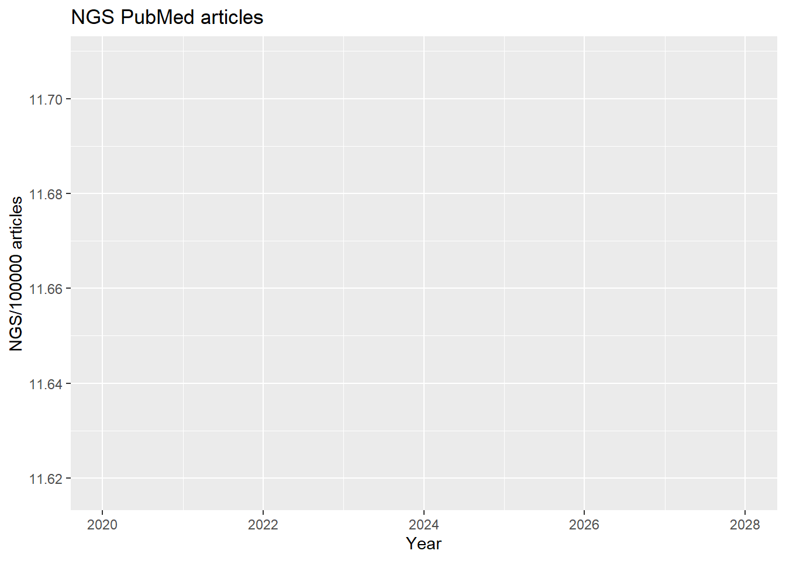
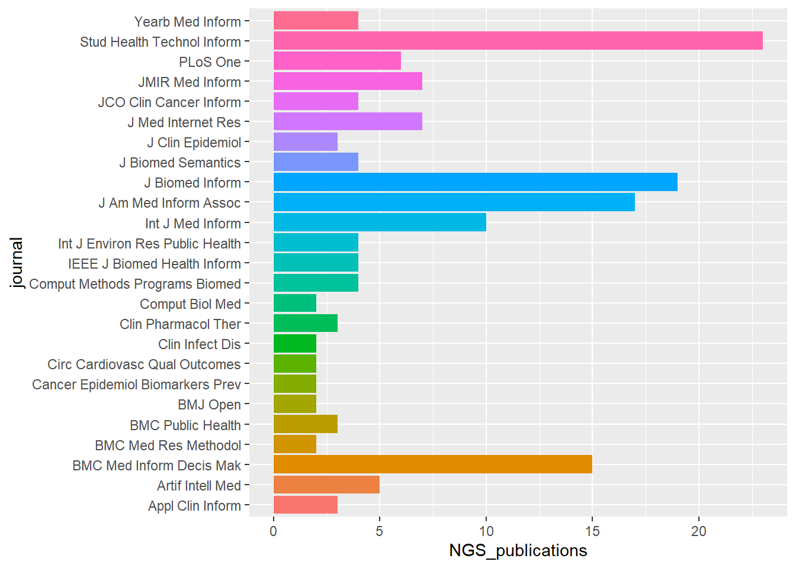
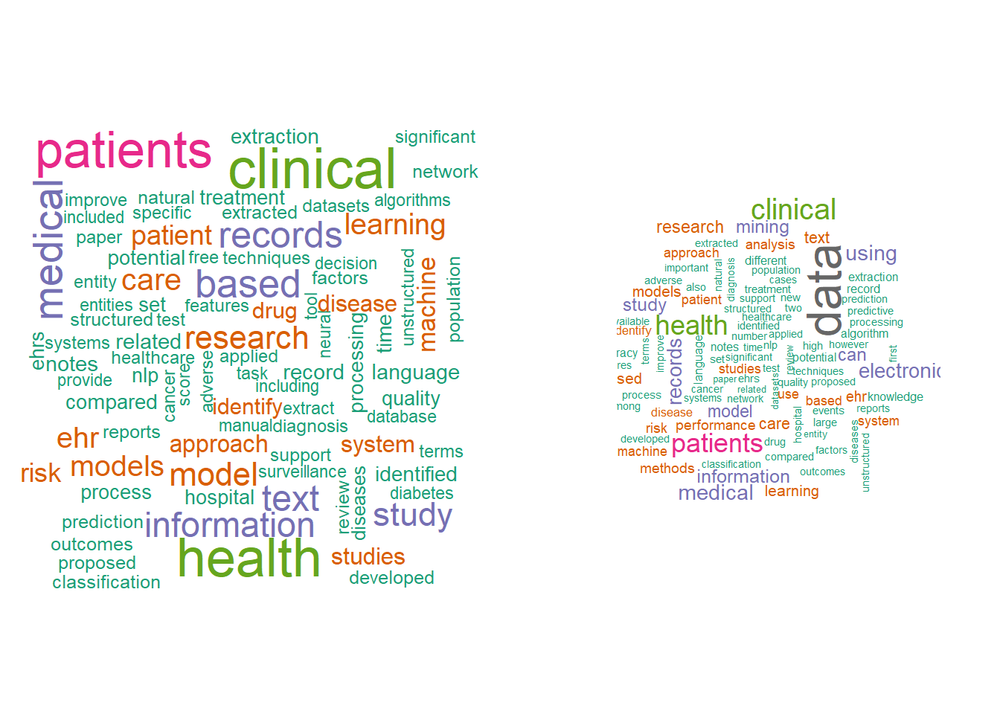
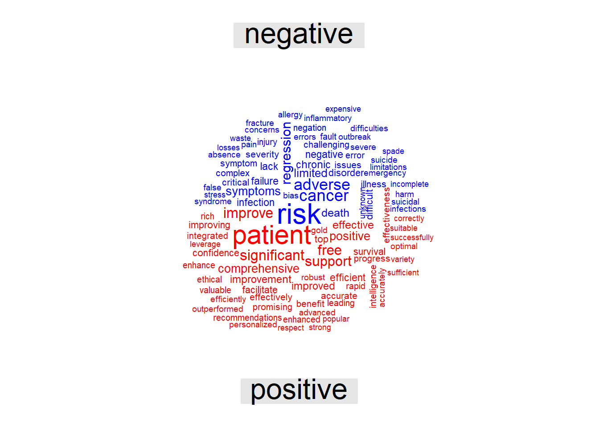
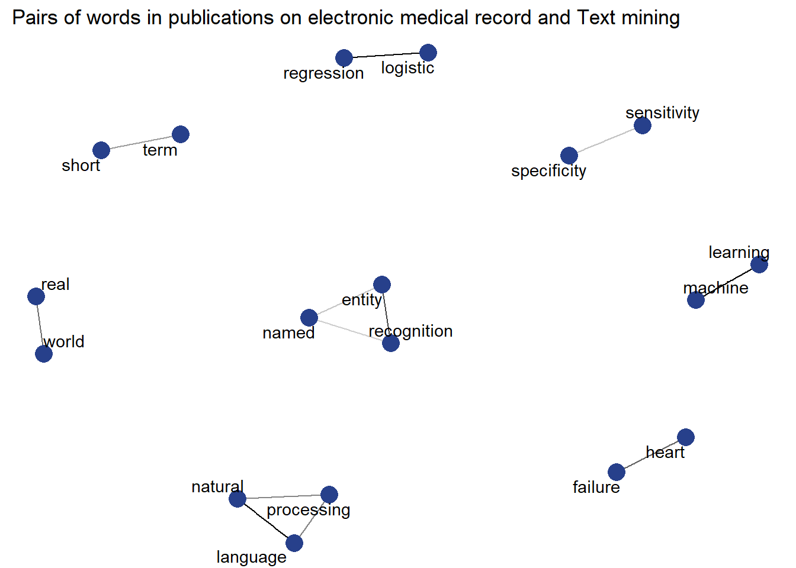
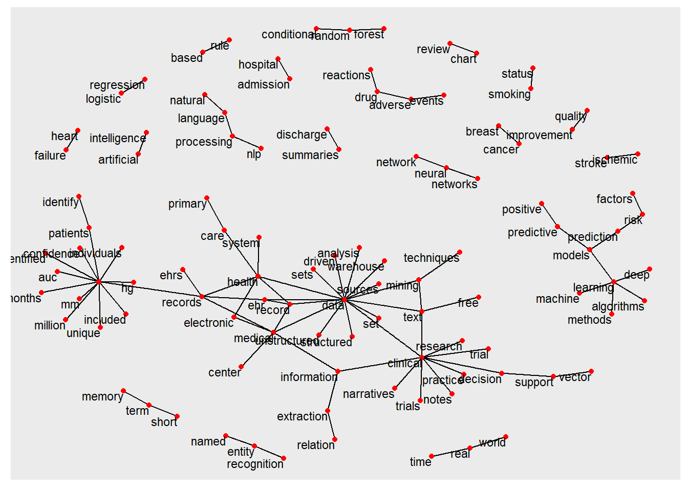
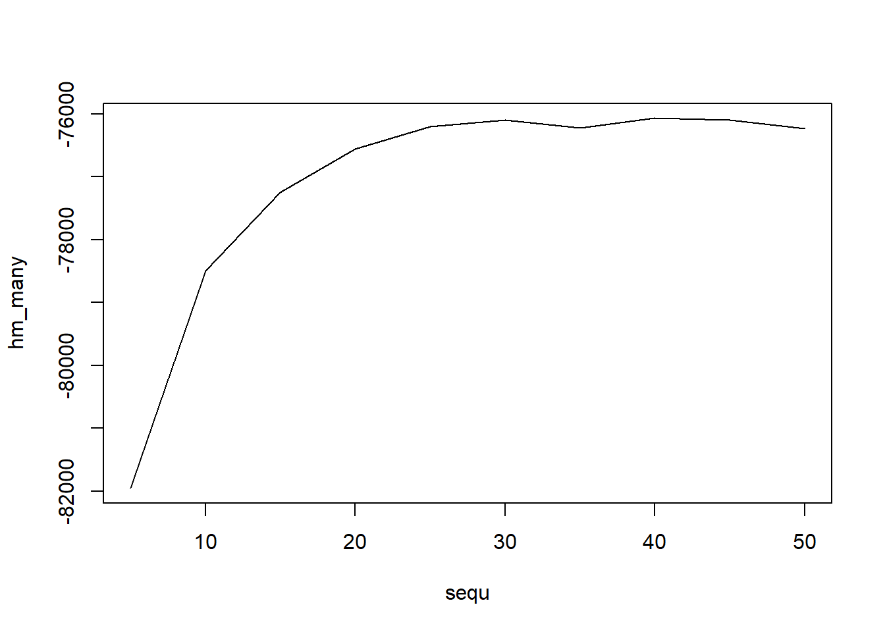

Chapter 7 Machine Learning Part 2
This section deals with handling of text data and machine learning. R has several excellent libraries such as tm, tidytext, textmineR and quanteda for handling text data.
7.1 Bag of words
Bag of words or unigram analysis describe data in which words in a sentence were separated or tokenised. Within this bag of words the order of words within the document is not retained. Depending on how this process is performed the negative connotation may be loss. Consider “not green” and after cleaning of the document, only the color “green” remain.
The following codes illustrate the processing steps to clean up a document. These include turning words to lower case as R is case sensitive. Next stop word filter is used to remove phrases like “I”, “he”, “she”, “they” etc.
7.1.1 TFIDF
Term frequency defines the frequency of a term in a document. The document frequency defines how often a term is used across document. The inverse document frequency can be seen as a weight to decrease the importance of commonly words used across documents. Term frequency inverse document frequency is a process used to down weight common terms and highlight important terms in the document.
In the example under topic modeling, an example of creating tfidf is shown. Other packages like tidytext, textmineR have functions for creating tfidf
7.1.2 Extracting data from web
This is an example using RISmed library to extract data from PubMed on electronic medcical record and text mining for 2021.
##
## Attaching package: 'dplyr'## The following objects are masked from 'package:stats':
##
## filter, lag## The following objects are masked from 'package:base':
##
## intersect, setdiff, setequal, union## Loading required package: RColorBrewer## Loading required package: NLP##
## Attaching package: 'NLP'## The following object is masked from 'package:ggplot2':
##
## annotateThe function to extract data from PubMed.
#search 25/9/21
query<-"electronic medical record + text mining"
ngs_search <- EUtilsSummary(query, type="esearch",db = "pubmed",mindate=2016, maxdate=2018, retmax=30000)
summary(ngs_search)
QueryCount(ngs_search)
ngs_records <- EUtilsGet(ngs_search)
#save(ngs_records,file="ngs_records.Rda")Data such as tear of publications can be easily extracted.
#reload saved search
load("./Data-Use/EMR_Textmiing_ngs_records.Rda")
#year
years <- YearPubmed(ngs_records)
ngs_pubs_count <- as.data.frame(table(years))
total <- NULL
for (i in 2020:2021){
peryear <- EUtilsSummary("", type="esearch", db="pubmed", mindate=i, maxdate=i)
total[i] <- QueryCount(peryear)
}
year <- 2020:2021
total_pubs_count<- as.data.frame(cbind(year,total[year]))
names(total_pubs_count) <- c("year","Total_publications")
names(ngs_pubs_count) <- c("year","NGS_publications")
pubs_year <- merge(ngs_pubs_count,total_pubs_count,by="year")
pubs_year$NGS_publications_normalized <- pubs_year$NGS_publications *100000 / pubs_year$Total_publications
#write.table(pubs_year,"NGS_publications_per_year.txt",quote=F,sep="\t",
#row.names=F)
#journal
journal <- ISOAbbreviation(ngs_records)
ngs_journal_count <- as.data.frame(table(journal))
ngs_journal_count_top25 <- ngs_journal_count[order(-ngs_journal_count[,2]),][1:25,]
journal_names <- paste(ngs_journal_count_top25$journal,"[jo]",sep="")
total_journal <- NULL
for (i in journal_names){
perjournal <- EUtilsSummary(i, type='esearch', db='pubmed',mindate=2020, maxdate=2021)
total_journal[i] <- QueryCount(perjournal)
}
#save(total_journal,file="total_journal.Rda")
journal_ngs_total <- cbind(ngs_journal_count_top25,total_journal)
names(journal_ngs_total) <- c("journal","NGS_publications","Total_publications")
journal_ngs_total$NGS_publications_normalized <- journal_ngs_total$NGS_publications / journal_ngs_total$Total_publications
#write.table(journal_ngs_total,"NGS_publications_per_journal.txt",quote=F,
#sep="\t",row.names=F)
pubs_per_year <- read.table("NGS_publications_per_year.txt",header = T,sep="\t")
pubs_per_journal <- read.table("NGS_publications_per_journal.txt",header = T,sep="\t")Create list for high and low impact factor journals
#extract title and abstract
pubmed_data <- data.frame('Pmid'=PMID(ngs_records),
'Year'=YearPubmed(ngs_records),'Title'=ArticleTitle(ngs_records),
'Journal'=MedlineTA(ngs_records),'Abstract'=AbstractText(ngs_records))
#abstract is a column in pybmed_data data frame
pubmed_data$Abstract <- as.character(pubmed_data$Abstract)
pubmed_data$Abstract <- gsub(",", " ", pubmed_data$Abstract, fixed = TRUE)
####
#partition data to high and low impact factor journals
#high impact factor journals list
#note Lancet includes Lancet Neurology etc
hi <- pubmed_data[grepl("Lancet|Neurology|N Engl J Med|Ann Neurol", pubmed_data$Journal),]
#low impact factor journals list
li <- pubmed_data[grepl("Mult Scler|Int J MS Care|J Neurol|Cochrane|BMC|
PLoS|BMJ Open", pubmed_data$Journal),]
#join
hia<-paste(hi$Abstract, collapse="")
lia<-paste(li$Abstract,collapse="")Plot of journal publications normalised by year.
#ggplot
ggplot(pubs_per_year,aes(year, NGS_publications_normalized)) + geom_line (colour="blue",size=2) +
xlab("Year") +
ylab("NGS/100000 articles")+expand_limits(x=c(2020,2028))+
ggtitle("NGS PubMed articles")## geom_path: Each group consists of only one observation. Do you need to adjust
## the group aesthetic?
ggplot(pubs_per_journal,aes(journal, NGS_publications,fill=journal)) + geom_bar(stat="identity")+
coord_flip()+
theme(legend.position="none")
Plot of journal publications normalised by journal.
ggplot(pubs_per_journal ,aes(journal,
NGS_publications_normalized,fill=journal)) + geom_bar(stat="identity")+
coord_flip()+
theme(legend.position="none")
Corpus
The steps in processing and creating a Corpus from tm library is illustrated.
# create list of stop-words
myStopwords=c("It","mg","kg","µgl","=","journals","medline","embase","ebsco",
"cinahl", "background","method","results","conclusion","http","web","i","ii",
"iii","ci","jan","january","feb","february","march","april","may","june",
"july","august", "sept","september","oct","october","nov","november","dec",
"december")
#corpus = Corpus(VectorSource(all))
myCorpus = VCorpus(VectorSource(pubmed_data$Abstract))
myCorpus <- tm_map(myCorpus, content_transformer(tolower))
myCorpus <- tm_map(myCorpus, removeNumbers)
myCorpus <- tm_map(myCorpus, removePunctuation)
myCorpus <- tm_map(myCorpus, removeWords, stopwords ("english"),lazy=TRUE)
myCorpus<- tm_map(myCorpus,removeWords,myStopwords)
myCorpus <- tm_map(myCorpus, stripWhitespace, lazy=TRUE)
# document term matrix
dtm <- DocumentTermMatrix(myCorpus,control = list(wordLengths=c(3, 20)))
#ensure non non zero entry
rowTotals <- apply(dtm , 1, sum) #Find the sum of words in each Document
dtm1 <- dtm[rowTotals> 0, ]
# create term-document matrix
tdm <- TermDocumentMatrix(myCorpus,control = list(wordLengths=c(3, 20)))
#ensure non non zero entry
rowTotals <- apply(tdm , 1, sum) #Find the sum of words in each Document
tdm1 <- tdm[rowTotals> 0, ] Here, the same preprocessing steps are performed using tidytext.
mystopwords=bind_rows(data.frame(word= c("It","mg","kg","journals","medline","embase","ebsco","cinahl","background",
"method","results","conclusion","http","web","i","ii","iii","ci",
"jan","january","feb","february","march","april","may","june","july","august",
"sept","september","oct","october","nov","november","dec","december"),
lexicon=c("custom")),stop_words)
#the abstract from the pubmed data is extracted
abs<-pubmed_data$Abstract
abs<-iconv(abs, to = 'utf-8')
abs <- (abs[!is.na(abs)])
abCorpus<-VCorpus(VectorSource(abs))
ab<-tidy(abCorpus)
#token words
ab_word<-ab %>% unnest_tokens(word,text) %>%
mutate(word = gsub("[^A-Za-z ]","",word)) %>%
filter(word != "") %>%
#remove stopwords from customised list
anti_join(mystopwords) ## Joining, by = "word"7.2 Wordcloud
A trick with wordcloud is setting the right number of words, the range of size of the words to be plotted.
par(mfrow=c(1,2))
ab_word%>% count(word) %>%
with(wordcloud(word,n,min.freq = 20,
#min.freq specifies the threshold for words to be plotted
# scale is a vector of length 2 to indicate the range of size of words # max.words is the maximum number of words to be plotted
# rot.per is the proportion of words with 90 degrees rotation
max.words = 100, colors = brewer.pal(8, "Dark2")),
scale = c(1,.2), per.rot = 0.4)
m <- as.matrix(tdm1)
v <- sort(rowSums(m),decreasing=TRUE)
d <- data.frame(word = names(v),freq=v)
wordcloud(d$word,d$freq, min.freq = 20, max.words = 100, scale=c(2,.3), colors = brewer.pal(8, "Dark2"), per.rot = 0.4, )
Plot Wordcloud with negative and positive sentiment from Bing library. Other sentiment libraries include afinn, loughran and nrc.
##
## Attaching package: 'reshape2'## The following object is masked from 'package:tidyr':
##
## smithsab_word %>% inner_join(get_sentiments("bing")) %>%
count(word, sentiment, sort=TRUE) %>%
acast(word~sentiment,value.var = "n",fill=0) %>%
comparison.cloud(colors = c("blue","red"),
title.size = 2,
max.words = 100, scale=c(2,.5))## Joining, by = "word"
graph analysis of word relationship
## Registering fonts with R##
## Attaching package: 'igraph'## The following object is masked from 'package:tidyr':
##
## crossing## The following objects are masked from 'package:dplyr':
##
## as_data_frame, groups, union## The following objects are masked from 'package:stats':
##
## decompose, spectrum## The following object is masked from 'package:base':
##
## union## Loading required package: viridisLite#abstract
ab_word_cors <-
ab_word %>%
mutate(section = row_number() %/% 10) %>%
filter(section > 0) %>%
filter(!word %in% stop_words$word) %>%
group_by(word) %>%
filter(n() >= 20) %>%
pairwise_cor(word, section, sort = TRUE)
ab_word_cors %>%
filter(correlation > .5) %>%
graph_from_data_frame() %>%
ggraph(layout = "fr") +
geom_edge_link(aes(edge_alpha = correlation), show.legend = FALSE) + geom_node_point(color ="#27408b", size = 5) +
geom_node_text(aes(label = name), repel = TRUE) +
theme_void(base_family="Roboto")+
labs(title=" Pairs of words in publications on electronic medical record and Text mining ")
7.3 Bigram analysis
ab_bigrams <- ab %>%
unnest_tokens(bigram, text, token = "ngrams", n = 2) %>%
mutate(bigram = gsub("[^A-Za-z ]","", bigram)) %>%
filter(bigram != "")
bigrams_separated <- ab_bigrams %>%
separate(bigram, c("word1", "word2"), sep = " ")
bigrams_filtered <- bigrams_separated %>%
filter(!word1 %in% mystopwords$word) %>%
filter(!word2 %in% mystopwords$word)
bigram_counts <- bigrams_filtered %>%
count(word1, word2, sort = TRUE)
bigrams_united <- bigrams_filtered %>%
unite(bigram, word1, word2, sep = " ")
bigrams_united## # A tibble: 22,398 x 8
## author datetimestamp description heading id language origin bigram
## <lgl> <dttm> <lgl> <lgl> <chr> <chr> <lgl> <chr>
## 1 NA 2023-03-02 12:51:39 NA NA 1 en NA growing~
## 2 NA 2023-03-02 12:51:39 NA NA 1 en NA elderly~
## 3 NA 2023-03-02 12:51:39 NA NA 1 en NA populat~
## 4 NA 2023-03-02 12:51:39 NA NA 1 en NA incurab~
## 5 NA 2023-03-02 12:51:39 NA NA 1 en NA chronic~
## 6 NA 2023-03-02 12:51:39 NA NA 1 en NA continu~
## 7 NA 2023-03-02 12:51:39 NA NA 1 en NA medical~
## 8 NA 2023-03-02 12:51:39 NA NA 1 en NA service~
## 9 NA 2023-03-02 12:51:39 NA NA 1 en NA mental ~
## 10 NA 2023-03-02 12:51:39 NA NA 1 en NA impairm~
## # ... with 22,388 more rows## IGRAPH ce30945 DN-- 106 97 --
## + attr: name (v/c), n (e/n)
## + edges from ce30945 (vertex names):
## [1] -> electronic->health machine ->learning
## [4] health ->records text ->mining data ->mining
## [7] natural ->language language ->processing medical ->records
## [10] ->patients electronic->medical health ->care
## [13] ehr ->data health ->record free ->text
## [16] clinical ->notes deep ->learning clinical ->data
## [19] entity ->recognition medical ->record processing->nlp
## [22] neural ->network records ->ehrs logistic ->regression
## + ... omitted several edgesThe relationship among the bigrams are illustrated here.
##
## Attaching package: 'tidygraph'## The following object is masked from 'package:igraph':
##
## groups## The following object is masked from 'package:stats':
##
## filter## # A tbl_graph: 106 nodes and 97 edges
## #
## # A directed multigraph with 20 components
## #
## # Node Data: 106 x 1 (active)
## name
## <chr>
## 1 ""
## 2 "electronic"
## 3 "machine"
## 4 "health"
## 5 "text"
## 6 "data"
## # ... with 100 more rows
## #
## # Edge Data: 97 x 3
## from to n
## <int> <int> <int>
## 1 1 1 1082
## 2 2 4 173
## 3 3 27 119
## # ... with 94 more rowsset.seed(2017)
#plot(bigram_graph)
ggraph(bigram_graph, layout = "fr") +
geom_edge_link() +
geom_node_point(color = "red") +
geom_node_text(aes(label = name), size=3,vjust = 1, hjust = 1)
7.4 Trigram
ab_trigrams <- ab %>%
unnest_tokens(trigram, text, token = "ngrams", n = 2) %>%
mutate(trigram = gsub("[^A-Za-z ]","", trigram)) %>%
filter(trigram != "")
trigrams_separated <- ab_trigrams %>%
separate(trigram, c("word1", "word2","word3"), sep = " ")## Warning: Expected 3 pieces. Missing pieces filled with `NA` in 72761 rows [1, 2,
## 3, 4, 5, 6, 7, 8, 9, 10, 11, 12, 13, 14, 15, 16, 17, 18, 19, 20, ...].trigrams_filtered <- trigrams_separated %>%
filter(!word1 %in% mystopwords$word) %>%
filter(!word2 %in% mystopwords$word) %>%
filter(!word3 %in% mystopwords$word)
trigram_counts <- trigrams_filtered %>%
count(word1, word2, word3, sort = TRUE)
trigram_counts## # A tibble: 14,100 x 4
## word1 word2 word3 n
## <chr> <chr> <chr> <int>
## 1 "" "" NA 1082
## 2 "electronic" "health" NA 173
## 3 "machine" "learning" NA 119
## 4 "health" "records" NA 108
## 5 "text" "mining" NA 91
## 6 "data" "mining" NA 76
## 7 "natural" "language" NA 68
## 8 "language" "processing" NA 66
## 9 "medical" "records" NA 66
## 10 "" "patients" NA 64
## # ... with 14,090 more rowstrigrams_united <- trigrams_filtered %>%
unite(trigram, word1, word2, word3, sep = " ")
trigrams_united## # A tibble: 22,398 x 8
## author datetimestamp description heading id language origin trigram
## <lgl> <dttm> <lgl> <lgl> <chr> <chr> <lgl> <chr>
## 1 NA 2023-03-02 12:51:39 NA NA 1 en NA growing~
## 2 NA 2023-03-02 12:51:39 NA NA 1 en NA elderly~
## 3 NA 2023-03-02 12:51:39 NA NA 1 en NA populat~
## 4 NA 2023-03-02 12:51:39 NA NA 1 en NA incurab~
## 5 NA 2023-03-02 12:51:39 NA NA 1 en NA chronic~
## 6 NA 2023-03-02 12:51:39 NA NA 1 en NA continu~
## 7 NA 2023-03-02 12:51:39 NA NA 1 en NA medical~
## 8 NA 2023-03-02 12:51:39 NA NA 1 en NA service~
## 9 NA 2023-03-02 12:51:39 NA NA 1 en NA mental ~
## 10 NA 2023-03-02 12:51:39 NA NA 1 en NA impairm~
## # ... with 22,388 more rows## IGRAPH d175291 DN-- 106 97 --
## + attr: name (v/c), word3 (e/c), n (e/n)
## + edges from d175291 (vertex names):
## [1] -> electronic->health machine ->learning
## [4] health ->records text ->mining data ->mining
## [7] natural ->language language ->processing medical ->records
## [10] ->patients electronic->medical health ->care
## [13] ehr ->data health ->record free ->text
## [16] clinical ->notes deep ->learning clinical ->data
## [19] entity ->recognition medical ->record processing->nlp
## [22] neural ->network records ->ehrs logistic ->regression
## + ... omitted several edgesThe relationship among the trigrams are illustrated here.
## # A tbl_graph: 106 nodes and 97 edges
## #
## # A directed multigraph with 20 components
## #
## # Node Data: 106 x 1 (active)
## name
## <chr>
## 1 ""
## 2 "electronic"
## 3 "machine"
## 4 "health"
## 5 "text"
## 6 "data"
## # ... with 100 more rows
## #
## # Edge Data: 97 x 4
## from to word3 n
## <int> <int> <chr> <int>
## 1 1 1 NA 1082
## 2 2 4 NA 173
## 3 3 27 NA 119
## # ... with 94 more rows7.5 Topic modeling or thematic analysis
Two methods for unsupervised thematic analysis, NMF and probabilistic topic model, are illustrated.
7.5.1 Probabilistic topic model
Probabilistic topic modelling is a machine learning method that generates topics or discovers themes among a collection of documents. This step was performed using the Latent Dirichlet Allocation algorithm via the topicmodels package in R. An issue with topic modeling is that the number of topics are not known. It can be estimated empirically or by examining the harmonic means of the log likelihood .
library(slam)
library(topicmodels)
#ensure non non zero entry
rowTotals <- apply(dtm , 1, sum) #Find the sum of words in each Document
dtm1 <- dtm[rowTotals> 0, ]
#create tfidf using slam library
term_tfidf <-
+ tapply(dtm$v/row_sums(dtm)[dtm$i],dtm$j,mean) *
+ log2(nDocs(dtm)/col_sums(dtm>0))
#remove frequent words
dtm1 <-dtm1[,term_tfidf>=median(term_tfidf)]
#dtm <-dtm[,term_tfidf>=0.0015]Estimate the number of topics based on the log likelihood of P(topics|documents) at each iterations
#find k
harmonicMean <- function(logLikelihoods, precision=2000L) {
library("Rmpfr")
llMed <- median(logLikelihoods)
as.double(llMed - log(mean(exp(-mpfr(logLikelihoods,
prec = precision) + llMed))))
}
## estimate k
k = 20
burnin = 1000
iter = 1000
keep=50
fitted <- LDA(dtm1, k = k, method = "Gibbs",control = list(burnin = burnin,
iter = iter, keep = keep) )
# where keep indicates that every keep iteration the log-likelihood is evaluated and stored. This returns all log-likelihood values including burnin, i.e., these need to be omitted before calculating the harmonic mean:
logLiks <- fitted@logLiks[-c(1:(burnin/keep))]
# assuming that burnin is a multiple of keep and
harmonicMean(logLiks)## Loading required package: gmp##
## Attaching package: 'gmp'## The following objects are masked from 'package:base':
##
## %*%, apply, crossprod, matrix, tcrossprod## C code of R package 'Rmpfr': GMP using 64 bits per limb##
## Attaching package: 'Rmpfr'## The following object is masked from 'package:gmp':
##
## outer## The following objects are masked from 'package:stats':
##
## dbinom, dgamma, dnbinom, dnorm, dpois, pnorm## The following objects are masked from 'package:base':
##
## cbind, pmax, pmin, rbind## [1] -76604.37# generate numerous topic models with different numbers of topics
sequ <- seq(5, 50, 5) # in this case a sequence of numbers from 5 to 50, by 5.
fitted_many <- lapply(sequ, function(k) LDA(dtm1, k = k, method = "Gibbs",
control = list(burnin = burnin, iter = iter, keep = keep) ))
# extract logliks from each topic
logLiks_many <- lapply(fitted_many, function(L) L@logLiks[-c(1:(burnin/keep))])
# compute harmonic means
hm_many <- sapply(logLiks_many, function(h) harmonicMean(h))
# inspect
plot(sequ, hm_many, type = "l")
## [1] 40The previous analysis show that there are 40 topics. For ease of illustrations LDA is perform with 5 topics.
#perform LDA
lda_EHR <- LDA(dtm1, k = 10,
method="Gibbs", control=list(seed=1234,burnin=1000,thin=100,iter=1000))
#extract topics terms and beta weights
EHR_topics <- tidy(lda_EHR, matrix = "beta")
#view data by topics
EHR_top_terms <- EHR_topics %>%
group_by(topic) %>%
slice_max(beta, n = 10) %>%
ungroup() %>%
arrange(topic, -beta)
EHR_top_terms %>%
mutate(term = reorder_within(term, beta, topic)) %>%
ggplot(aes(beta, term, fill = factor(topic))) +
geom_col(show.legend = FALSE) +
facet_wrap(~ topic, scales = "free") +
scale_y_reordered()
Compare differences in words between topics.
7.5.2 NMF
In the previous chapter, NMF was used as a method to cluster data. Here, it can be framed as a method for topic modeling. The term document matrix is used.